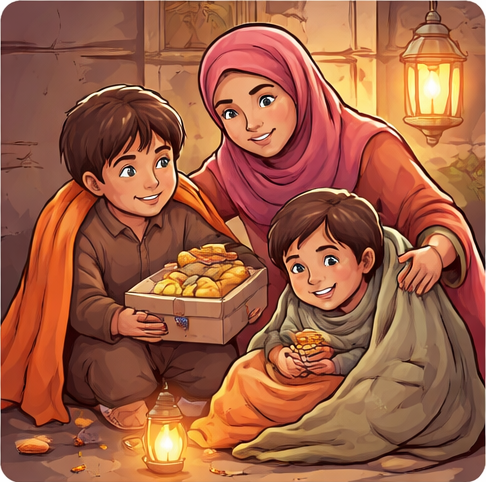

The Heart of Giving: Why Generosity is a Profound Act of Worship

Islam is not merely a set of rituals; it is a holistic way of life that emphasizes the bond between humanity and the Creator, and between individuals within a community. Among the many path ways to earn the pleasure of Allah, generosity (Sakhawat) stands as one of the most beloved. It is a divine quality that reflects the mercy of Allah (the All-Generous) in the human heart.
True generosity is not just about distributing excess wealth; it is about widening your hands to help others and prioritizing their needs over your own. As we noted in our previous article on the Importance of the Quran, the Holy Book provides a complete constitution for life, and generosity is a vital pillar within that framework. To cultivate this spiritual trait, daily recitation serves as a continuous reminder of our obligations to our fellow humans.
1. The Islamic Vision of Philanthropy
Allah (SWT) is the most generous, and He loves when His servants manifest this trait. The Prophet (PBUH) said: "Allah is generous and loves generosity." A generous person is close to Allah, close to Paradise, and close to the people, while being far from Hellfire. Islam teaches us that wealth is a trust (Amanah) from Allah, and we are merely the conduits through which He provides for others.
Many fear that giving wealth will lead to poverty, but the Quran teaches the opposite. Allah has promised that whatever is spent in His path will be returned manifold. This is the ultimate secret of success that only those with unwavering faith can truly grasp.
2. The Hidden Secret to Barakah in Provision
Generosity is not just a provision for the Hereafter; it brings profound mental peace and Barakah (blessings) to your worldly sustenance. A generous person's table never stays empty. When you fulfill the needs of others, the Lord of the Heavens fulfills your needs. During difficult times, combining Patience and Dua with acts of charity acts as a shield against calamities.
For Muslims living in Western countries, instilling this quality in the next generation is vital to keep them grounded in their spiritual values amidst a materialistic culture.
3. Cultivating Giving in Our Children
It is the parents' responsibility to integrate the concept of 'Sharing' into Islamic child training. Teach them that their toys or pocket money also belong to others in need. When children see their parents helping the poor, it becomes a part of their own identity.
We must recognize that the seeds sown during the best age for learning will eventually grow into strong trees. Along side teaching them Salah, we should explain the immense significance of human rights and charity.

Your Child's Future, Shaped by the Quran!
The Holy Quran is more than words; it is the architect of character. At Saeed Quran Academy, we don't just teach Tilawah; we nurture our students to become outstanding, generous members of society.
4. The Many Faces of Generosity
Generosity isn't restricted to monetary giving. Dedicating your time to someone, teaching your knowledge to others, or even offering a comforting smile to someone in distress are all profound acts of kindness. As we saw in the benefits of online learning, providing education is a form of Sadaqah Jariyah. We should use our talents for the betterment of others.
If you have a busy schedule, follow these tips for educational success to manage your time better and find opportunities to serve your community.
Conclusion: Be Generous, Find Peace
Remember, the hands that give are never left empty by Allah. Generosity is the ultimate evidence of a strong faith. Make a firm intention today to give something, however small, for the sake of Allah every Single day. This trait will make your life meaningful and your Hereafter radiant.
Visit our English Blog Section for deeper insights into Islamic living.